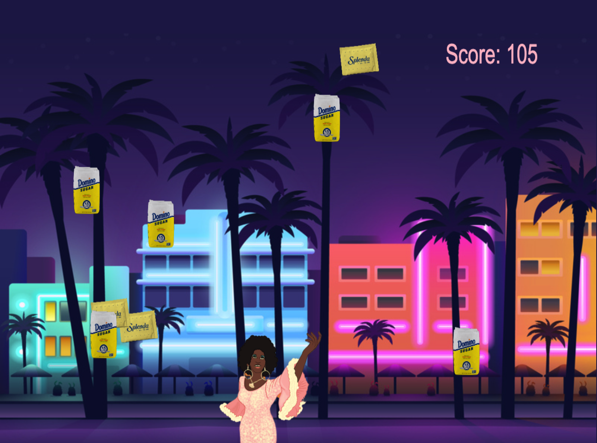

Built with JavaScript, Canvas, HTML, and CSS.

HOW TO PLAY: Azucar is not only Celia Cruz's catch phrase, but what she needs to claim sweet victory! Use the left and right arrows of your keyboard to catch her azucar. Each bag is worth 10 points - earn 150 points and you're a winner! Beware of the artificial sweeteners, each one caught will deduct 5 points from your score.
This game was inspired by my heritage, and the playful spirit of Celia Cruz's music.